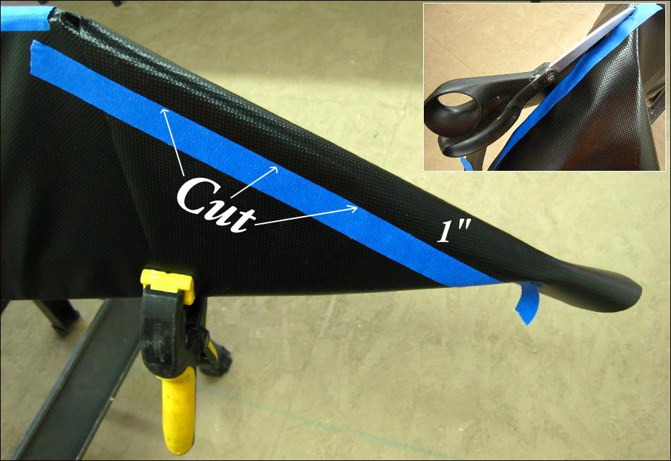

| PVC Skinning (Stems) | Menu Previous Page Next Page |
|

The stems are skinned using the "Overlap" method. Pull the loose skin tightly over the sloping stems and clamp in place at the gunwales. Be sure staples are holding the skin in place along the opposite gunwale. Place a strip of tape 1" past the centerline.
|
|